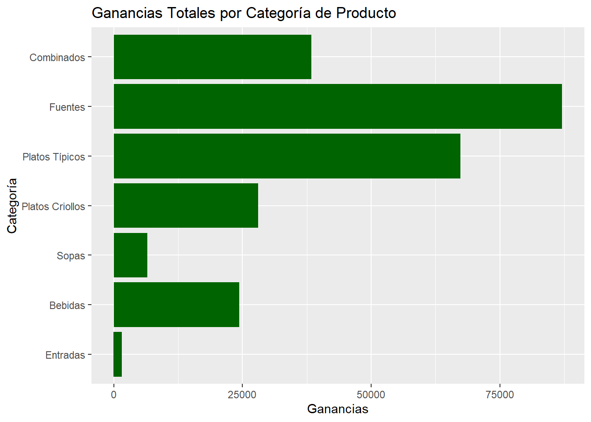
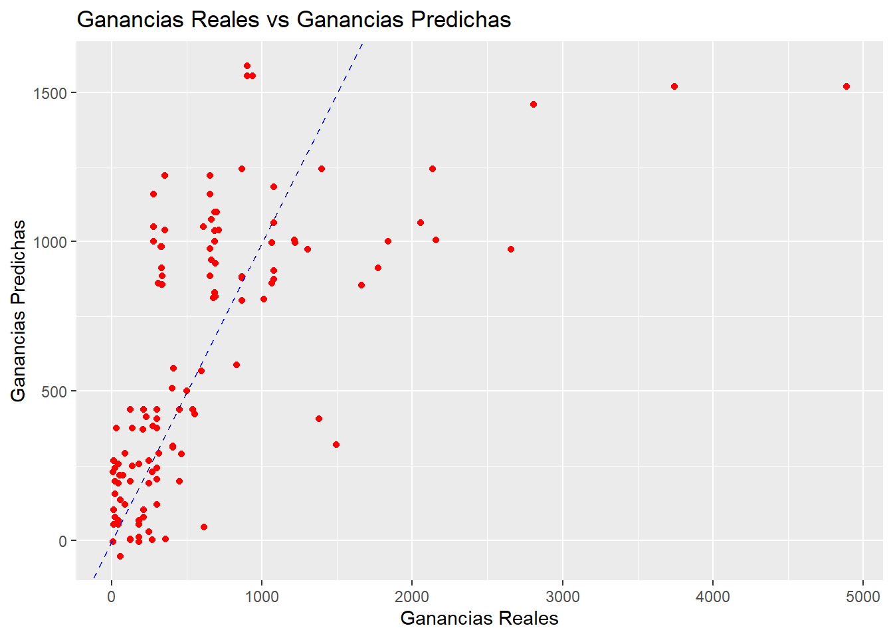

#install.packages(c("DBI", "odbc", "tidyverse", "caret", "ggplot2", "corrplot"))
#161.132.54.162
#estudiante
#Adm1n.unc2025El Cajabambino, Data Mining
Minería de datos para analizar y predecir las ventas por cliente usando Northwind
Objetivo
Extraer y analizar datos de la base de datos RestauranteMart en SQL Server para construir un modelo de regresión lineal. El objetivo específico es predecir las ganancias totales (Ganancias) de un producto basándose en su categoria, el nombre del mes y el día de la semana.
Paquetes necesarios
Instalación de paquetes:
instal.packages( c(“DBI”, “odbc”, “tidyverse”, “caret”, “ggplot2”, “corrplot”)
)
library(odbc)
library(DBI)
library(tidyverse)── Attaching core tidyverse packages ──────────────────────── tidyverse 2.0.0 ──
✔ dplyr 1.1.4 ✔ readr 2.1.5
✔ forcats 1.0.0 ✔ stringr 1.5.1
✔ ggplot2 3.5.2 ✔ tibble 3.3.0
✔ lubridate 1.9.4 ✔ tidyr 1.3.1
✔ purrr 1.1.0
── Conflicts ────────────────────────────────────────── tidyverse_conflicts() ──
✖ dplyr::filter() masks stats::filter()
✖ dplyr::lag() masks stats::lag()
ℹ Use the conflicted package (<http://conflicted.r-lib.org/>) to force all conflicts to become errorslibrary(caret)Cargando paquete requerido: lattice
Adjuntando el paquete: 'caret'
The following object is masked from 'package:purrr':
liftlibrary(ggplot2)
library(corrplot)corrplot 0.95 loadedConexión a Base de datos
Conexión a SQL Server
Realizar la consulta
consulta <- "
SELECT
p.nombreProducto,
p.categoria,
t.nombreMes,
t.diaSemana,
SUM(fv.numeroVentas) AS VentasTotales,
SUM(fv.margen) AS Ganancias
FROM
FactVentas AS fv
JOIN
DIM.Producto AS p ON fv.productokey = p.productokey
JOIN
DIM.Tiempo AS t ON fv.tiempokey = t.tiempokey
GROUP BY
p.nombreProducto,
p.categoria,
t.nombreMes,
t.diaSemana;
"Crear variable para capturar los datos de la conexión
ganancias_productos <- dbGetQuery(conexion, consulta)Cerrar Conexión
dbDisconnect(conexion)Estructura de los datos
glimpse(ganancias_productos)Rows: 417
Columns: 6
$ nombreProducto <chr> "Charalina", "Cerveza Cristal", "1/4 Cuy Frito", "Cerve…
$ categoria <chr> "Bebidas", "Bebidas", "Platos Típicos", "Bebidas", "Beb…
$ nombreMes <chr> "Abril", "Febrero", "Febrero", "Abril", "Mayo", "Junio"…
$ diaSemana <int> 3, 3, 7, 6, 2, 2, 7, 3, 4, 2, 4, 1, 6, 5, 4, 5, 2, 6, 3…
$ VentasTotales <int> 60, 30, 120, 30, 45, 30, 30, 30, 30, 15, 75, 75, 60, 30…
$ Ganancias <dbl> 300.000, 180.000, 2659.200, 210.000, 369.000, 180.000, …Análisis Exploratorio (EDA)
Resumen General
summary(ganancias_productos) nombreProducto categoria nombreMes diaSemana
Length:417 Length:417 Length:417 Min. :1.000
Class :character Class :character Class :character 1st Qu.:2.000
Mode :character Mode :character Mode :character Median :4.000
Mean :3.981
3rd Qu.:6.000
Max. :7.000
VentasTotales Ganancias
Min. : 15.00 Min. : 7.5
1st Qu.: 15.00 1st Qu.: 201.8
Median : 15.00 Median : 352.6
Mean : 28.63 Mean : 607.3
3rd Qu.: 30.00 3rd Qu.: 828.0
Max. :120.00 Max. :5441.4 Filtrar top 10 clientes con más ventas
ganancias_productos %>%
group_by(nombreProducto) %>%
summarise(GananciaTotal = sum(Ganancias)) %>%
arrange(desc(GananciaTotal)) %>%
head(10)# A tibble: 10 × 2
nombreProducto GananciaTotal
<chr> <dbl>
1 1/4 Cuy Frito 18282
2 Combinado 1 16843.
3 Cecina Shilpida para 5 16009.
4 Cecina Cajabambina para 5 14011.
5 Combinado 2 11729.
6 Cecina Cajabambina para 3 10375.
7 Cecina Shilpida para 3 10280.
8 Cuy entero frito 9976.
9 Cecina Frita para 3 9790.
10 Combinado 3 9778.Visualización de datos
Ventas por País
ggplot(ganancias_productos, aes(x = reorder(categoria, Ganancias), y = Ganancias)) +
geom_bar(stat = "identity", fill = "darkgreen") +
coord_flip() +
labs(title = "Ganancias Totales por Categoría de Producto", x = "Categoría", y = "Ganancias")
Preparación del modelo
Convertir a factor
ganancias_productos$categoria <- as.factor(ganancias_productos$categoria)
ganancias_productos$nombreMes <- as.factor(ganancias_productos$nombreMes)
ganancias_productos$diaSemana <- as.factor(ganancias_productos$diaSemana)Dividir los datos en Train Test
set.seed(123)
trainIndex <- createDataPartition(ganancias_productos$Ganancias, p = 0.7, list = FALSE)
trainData <- ganancias_productos[trainIndex, ]
testData <- ganancias_productos[-trainIndex, ]Modelo Predictivo: Regresión Lineal
modelo_reg <- train(
Ganancias ~ categoria + nombreMes + diaSemana,
data = trainData,
method = "lm"
)Resumen del modelo
summary(modelo_reg)
Call:
lm(formula = .outcome ~ ., data = dat)
Residuals:
Min 1Q Median 3Q Max
-942.7 -220.8 -50.6 117.9 4220.7
Coefficients:
Estimate Std. Error t value Pr(>|t|)
(Intercept) 248.851 126.140 1.973 0.04951 *
categoriaCombinados 1398.467 153.942 9.084 < 2e-16 ***
categoriaEntradas -62.478 151.552 -0.412 0.68047
categoriaFuentes 806.450 87.918 9.173 < 2e-16 ***
`categoriaPlatos Criollos` 310.935 100.358 3.098 0.00215 **
`categoriaPlatos Típicos` 783.011 96.156 8.143 1.34e-14 ***
categoriaSopas 294.169 173.226 1.698 0.09060 .
nombreMesFebrero 188.810 93.408 2.021 0.04421 *
nombreMesJunio 43.371 116.182 0.373 0.70921
nombreMesMarzo -5.623 114.166 -0.049 0.96075
nombreMesMayo 126.699 106.284 1.192 0.23425
diaSemana2 -238.792 120.625 -1.980 0.04874 *
diaSemana3 -181.727 119.430 -1.522 0.12925
diaSemana4 -219.142 128.727 -1.702 0.08981 .
diaSemana5 -146.309 123.275 -1.187 0.23630
diaSemana6 -171.923 118.088 -1.456 0.14656
diaSemana7 -247.410 124.430 -1.988 0.04776 *
---
Signif. codes: 0 '***' 0.001 '**' 0.01 '*' 0.05 '.' 0.1 ' ' 1
Residual standard error: 538.2 on 276 degrees of freedom
Multiple R-squared: 0.4175, Adjusted R-squared: 0.3837
F-statistic: 12.36 on 16 and 276 DF, p-value: < 2.2e-16Evaluación del modelo
predicciones <- predict(modelo_reg, newdata = testData)Calcular RMSE y \(R^2\)
postResample(predicciones, testData$Ganancias) RMSE Rsquared MAE
566.2180931 0.3993125 348.4588056 Comparación de datos Reales vs Predichos
Resultados
resultados <- data.frame(Real = testData$Ganancias, Predichos = predicciones)Gráfica de Reales vs Predichos
ggplot(
resultados,
aes(x = Real, y = Predichos)
) +
geom_point(color = "red") +
geom_abline(linetype = "dashed", color = "blue") +
labs(
title = "Ganancias Reales vs Ganancias Predichas",
x = "Ganancias Reales", y = "Ganancias Predichas"
)
Interpretación
El modelo de regresión lineal muestra que la categoría del producto, el mes y el día de la semana son factores significativos para predecir las ganancias, explicando aproximadamente el 41.75% de la variabilidad. Específicamente, las categorías Combinados, Fuentes y Platos Típicos son las más rentables, mientras que las ganancias son notablemente más altas en el mes de Febrero. Por otro lado, el modelo revela una disminución de las ganancias los martes y domingos, en comparación con otros días de la semana.
El análisis de los coeficientes del modelo de regresión revela que la categoría del producto es el factor más influyente en las ganancias, con los Combinados y Fuentes mostrando los efectos positivos más fuertes y estadísticamente significativos (***). Las categorías Platos Típicos y Platos Criollos también contribuyen significativamente a las ganancias. En contraste, las categorías Entradas y Sopas no demuestran una influencia significativa, lo que sugiere que su rentabilidad es comparable a la de la categoría de referencia (probablemente Bebidas) en este modelo.
En cuanto a los factores temporales, el modelo identifica patrones de rentabilidad en el tiempo. El mes de Febrero se asocia con un aumento significativo de las ganancias (*), lo que podría estar relacionado con eventos específicos de ese período. Por otro lado, los días de la semana marcan diferencias notables: el modelo predice que los martes (diaSemana2) y domingos (diaSemana7) tienen un impacto negativo y significativo en las ganancias, lo que indica que en estos días se genera menos rentabilidad en comparación con el día de la semana de referencia.
A pesar de que el modelo en su conjunto es estadísticamente significativo (p-valor del F-statistic < 2.2e-16), su capacidad predictiva es moderada. El valor de R2 ajustado de 0.3837 indica que las variables consideradas (categoría, mes, día de la semana) explican aproximadamente el 38.4% de la variación en las ganancias. Esto implica que una parte considerable de la variación no es capturada por el modelo y podría deberse a otros factores no incluidos, como promociones, eventos especiales o la estacionalidad más allá del mes. Para mejorar la precisión predictiva, sería recomendable explorar la inclusión de nuevas variables o la implementación de modelos de aprendizaje automático más complejos.
En resumen, este reporte es una herramienta estratégica para la gerencia. Permite identificar los productos más lucrativos y las tendencias temporales de la rentabilidad. La información obtenida puede guiar la toma de decisiones para optimizar el inventario, enfocar los esfuerzos de marketing en las categorías y períodos más rentables, y diseñar promociones específicas para los días de menor afluencia, con el objetivo de maximizar las ganancias del restaurante.
[1] "2025-08-15"Derechos Reservados © Inteligencia de Negocios, El Sabor Cajabambino